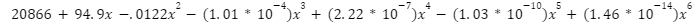

Hypixel Player Count
Trend Line Equation
Calculus-based analysis of the player count and statistics of the Hypixel server.
Abstract
This project examines the relationship between the number of players of Hypixel,
the world's largest Minecraft server, and the impact of the COVID-19 pandemic.
The global lockdown and the onset of social distancing policies have led to unprecedented user engagement on digital platforms.
Known for its wide variety of mini-games and vibrant communities, Hypixel serves as an interesting case study for this phenomenon. The aim of this study is to understand how external factors, specifically the COVID-19 pandemic, affected online gaming communities,
focusing on player participation in the form of daily active users.
From verifying the notion of player count increasing over the period to calculating the average number of players on a daily basis,
this calculus-based data analysis utilizes topics like first derivative, second derivative (concavity and point of inflection),
integration, the Mean Value Theorem, and Euler’s Method to examine the extent to which the epidemic has acted as a catalyst for the rise of online activity,
with a particular emphasis on gaming.